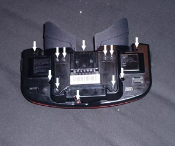
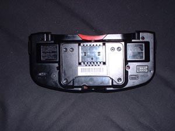
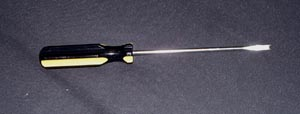
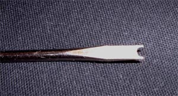
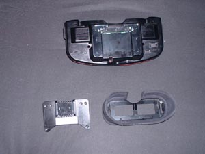
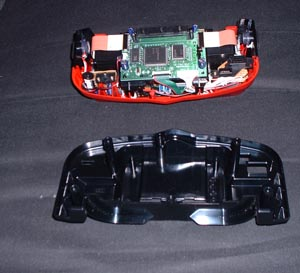
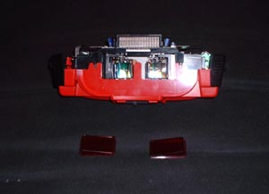
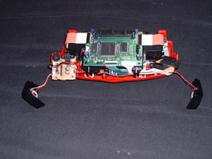
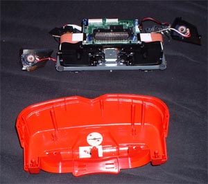
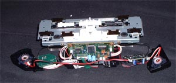

Dissecting the Virtual Boy
The first thing you want to do is flip the Virtual
Boy over and locate the 12 screws.

The next thing you want to do is remove the visor.

Then you have to remove the screws, which can be done by having the
right screwdriver or making one (I made one).
To make one, take a flat head screwdriver and use a dremel tool to
notch out a piece of the screwdriver so it grabs the notches in the
screw.

Here's a closeup of the head.

You can also modify a security bit like shown HERE.
The
first thing to remove is the bottom plate that attaches to the stand.

Then remove the bottom half.

Then spin it around and remove the eye pieces.

Then remove the side speakers and unscrew the boards attached.

Then lift the insides out of the red plastic top.

Then you have the center module of the Virtual Boy which has nothing
that can be really taken apart.

Now that you have ripped your Virtual Boy apart, there is not much you
can do with it. You will need to pull it apart to repair the
system, or to hook up the Rumble Pack or other mods, but other that
that, there is not much that can be done. I have a few ideas,
like hook up an audio input so you can listen to an audio CD through
the integrated speakers (which I love) while playing the game, or some
cool LEDs that show it is in use :-), but neither are very useful.
After you put it back together, you might want to put in standard
phillips screws to make it easier to put together and so you can open
it again if you want, and make sure you check the alignment by
inserting a game and pressing Left, B, Down, A, Up on the right D-Pad.
{kind=link}